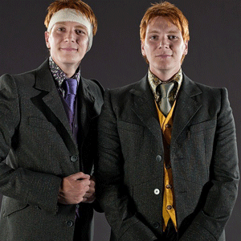

| [Banner] | +
Home | Twins Today | Twins on Television | Need to Know| Famous Literature | About Me |
+
|
|
+
Twins, both fraternal and identical, are unusal. However, there are some famous pairs that have made it onto our televsion screens. Some times, audiences may not even know that a set of twins is playing a character! In my lifetime, there is a famous television show and a movie that stand out in my mind for having twins in their casts. Both Full House and The Parent Trap were large parts of my childhood; I remember relating to the pairs of twins that are portrayed and laughing at some of the situations they were in.These were iconic for kids of my generation, but especially for me because I could relate to the characters. 
|
+
Table #1
|
+ Table #2
|
+ [Reference Links] | +